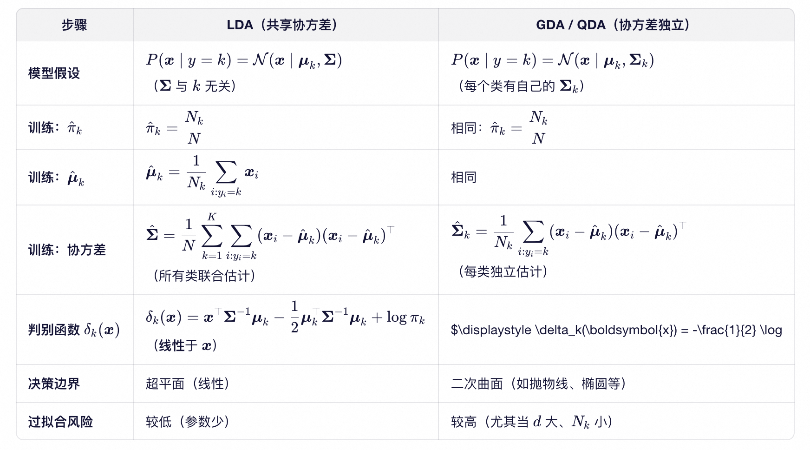

机器学习主要分为监督学习（Supervised Learning）、无监督学习（Unsupervised Learning）、强化学习（Reinforcement Learning）以及半监督学习（Semi-supervised Learning）等范式。
监督学习主要包括两大类基础任务：回归（Regression）和分类（Classification）。回归用于预测连续值（输出为实数），分类则用于预测离散类别标签（输出为有限集合中的某个类别）。此外，结构化学习（Structured Learning）是一类更复杂的监督学习任务，其输出是具有内部结构的对象（如序列、树等），可视为分类或回归的高维扩展。
在分类任务中，模型可分为生成式模型（Generative Models）和判别式模型（Discriminative Models）。生成式模型通过对联合分布 P(x,y) 建模来实现分类，典型方法包括高斯判别分析（GDA）及其两种常见形式——假设协方差矩阵共享的线性判别分析（LDA）和允许协方差矩阵独立的二次判别分析（QDA），以及朴素贝叶斯等。判别式模型则直接建模条件分布 P(y∣x)，代表方法有逻辑回归（Logistic Regression）、支持向量机（SVM）等。
本文将简要介绍高斯判别分析（GDA）的基本思想与形式。
问题设定 (1)
训练数据为一组带标签的样本。
对象：由 $d$ 个连续特征描述，表示为特征向量 $\boldsymbol{x} \in \mathbb{R}^d$；
标签：样本所属的类别，记为 $y$，其中 $y \in {c_1, c_2, \dots, c_K}$（离散变量，共 $K$ 个类别）后文使用$k$表示一个具体的类别，$y$表示类别变量；
样本：一个对象及其所属的类别构成一个样本，记为 $(\boldsymbol{x}_i, y_i)$；
样本集：给定 $N$ 个独立同分布的训练样本
$$
(\boldsymbol{x}_1, y_1),\ (\boldsymbol{x}_2, y_2),\ \dots,\ (\boldsymbol{x}_N, y_N)
$$
其中 $\boldsymbol{x}_i \in \mathbb{R}^d$ 是第 $i$ 个样本的特征向量，$y_i$ 是其对应的类别标签。
注：下标 $i$ 表示样本索引，而非向量分量；向量 $\boldsymbol{x}_i$ 的第 $j$ 个分量记为 $x_{ij}$。
任务：学习一个分类模型，使其能够对新的输入 $\boldsymbol{x}_{\text{new}}$ 预测其所属类别 $y$。
核心思想 (2)
假设训练样本按如下生成过程产生：
- 首先，从类别先验分布 $P(y)$ 中随机选择一个类别 $y = k$，其中 $P(y = k)$ 表示类别 $k$ 出现的概率；
- 然后，在已知 $y = k$ 的条件下，从类条件分布 $P(\boldsymbol{x} \mid y = k)$ 中生成特征向量 $\boldsymbol{x}$；
因此，样本 $(\boldsymbol{x}, y = k)$ 被生成的联合概率为：
$$
P(\boldsymbol{x}, y = k) = P(y = k) \cdot P(\boldsymbol{x} \mid y = k).
$$
说明：$P(\boldsymbol{x} \mid y = k)$ 表示——在已经选定类别 $y=k$ 的前提下，从该类别中生成特征向量 $\boldsymbol{x}$ 的概率。换句话说，它刻画了类别 $k$ 内部样本的分布规律（下文将把这一分布建模为多元高斯分布）。
实际上，训练样本来自于真实世界，并不是按上述方法生成的。但我们要构建真实世界的模型，手中只有这些训练数据。假如上述生成方式所产生的样本分布，与真实世界抽样得到的样本分布足够接近，我们就能据此反推真实世界的规律。把上述生成过程抽象成一个模型$P_{\text{model}}(\boldsymbol{x},y)$（类比回归问题中的模型——带未知参数的函数），只要这个模型联合分布足够接近真实世界的联合分布 $P_{\text{true}}(\boldsymbol{x},y)$，模型的预测也就可靠。正如 George E. P. Box 所言：
“All models are wrong, but some are useful.”
如何使得模型中的 $P(y)$ 和 $P(\boldsymbol{x} \mid y=k)$ 足够接近真实世界的分布？或者更严格地说，我们如何通过有限的训练数据，学习一个生成模型 $P_{\text{model}}(y)$ 和 $P_{\text{model}}(\boldsymbol{x} \mid y)$ 使其尽可能逼近真实世界的分布 $P_{\text{true}}(y)$ 和 $P_{\text{true}}(\boldsymbol{x} \mid y)$？
高斯判别分析（Gaussian Discriminant Analysis, GDA）提供了一种具体解决方案。
高斯判别分析 (3)
在回归问题中，首先根据领域知识（domain knowledge）选择一个带未知参数的函数形式作为模型（如线性函数、多项式或神经网络）。
分类问题同样如此：基于领域知识（domain knowledge）或对数据的先验理解，如果每个类别的特征在输入空间中近似服从高斯分布（即在给定类别条件下，样本呈“椭球状”聚集），那么选择高斯判别分析（Gaussian Discriminant Analysis, GDA）就是一种自然且合理的建模决策。
换句话说，GDA 适用于那些类条件分布 $P(\boldsymbol{x} \mid y = k)$ 近似服从多元高斯分布的场景。
这本质上是根据 domain knowledge 主动选择 GDA 作为模型，而非将 GDA 视为万能分类器。
GDA 模型定义如下：
类别先验 $P_{\text{model}}(y)$ 服从多项分布：
$$
P(y = k) = \pi_k, \quad \text{其中 } \pi_k \geq 0,\ \sum_{k=1}^{K} \pi_k = 1.
$$类条件分布 $P_{\text{model}}(\boldsymbol{x} \mid y = k)$ 服从多元高斯分布：
$$
P_{\text{model}}(\boldsymbol{x} \mid y = k) = \mathcal{N}(\boldsymbol{x} \mid \boldsymbol{\mu}_k, \boldsymbol{\Sigma}_k)
$$其中
$$
\mathcal{N}(\boldsymbol{x} \mid \boldsymbol{\mu}_k, \boldsymbol{\Sigma}_k) =
\frac{1}{(2\pi)^{d/2} |\boldsymbol{\Sigma}_k|^{1/2}}
\exp\left( -\frac{1}{2} (\boldsymbol{x} - \boldsymbol{\mu}_k)^\top \boldsymbol{\Sigma}_k^{-1} (\boldsymbol{x} - \boldsymbol{\mu}_k) \right)
$$是多元高斯分布的概率密度函数（PDF）。
说明：$\pi$ 是圆周率，和各类别的先验概率 $\pi_k$ 没有关系；$d$ 是特征的个数，也就是特征向量$\boldsymbol{x}$的维数。
类比回归问题中的模型（带未知参数的函数），GDA 模型中也包含一组待学习的未知参数，具体包括：
- 类别先验参数：$\pi_1, \pi_2, \dots, \pi_K$，表示各类别的先验概率；满足 $\sum_{k=1}^{K} \pi_k = 1$；
- 高斯分布参数：对每个类别 $k$，
- 均值向量 $\boldsymbol{\mu}_k \in \mathbb{R}^d$，
- 协方差矩阵 $\boldsymbol{\Sigma}_k \in \mathbb{R}^{d \times d}$（对称正定）。
因此，完整参数集可表示成：
$$
\boldsymbol{\theta} = ( \pi_1, \dots, \pi_K; \boldsymbol{\mu}_1, \dots, \boldsymbol{\mu}_K; \boldsymbol{\Sigma}_1, \dots, \boldsymbol{\Sigma}_K )
$$
引入参数集$\boldsymbol{\theta}$之后，我们把模型正式记做：$P_{\boldsymbol{\theta}}(\boldsymbol{x}, y)$；表示 $P_{\boldsymbol{\theta}}(y) \cdot P_{\boldsymbol{\theta}}(\boldsymbol{x} \mid y)$；
接下来的任务就是从训练数据中学习 $\boldsymbol{\theta}$，使得模型 $P_{\boldsymbol{\theta}}(\boldsymbol{x}, y)$ 最大程度地“解释”观测样本 $(\boldsymbol{x}_i, y_i)$，逼近真实数据分布。
在继续之前，需明确 $P_{\boldsymbol{\theta}}(\boldsymbol{x} \mid y = k)$ 的含义。
这是一个条件概率密度函数（conditional probability density function），其一般形式为 $P(A \mid B)$，表示在事件 $B$ 已经发生的前提下，事件 $A$ 发生的条件概率。
在当前上下文中：
- 事件 $B$：类别被选定为 $y = k$；
- 事件 $A$：生成的样本落入 $\boldsymbol{x}$ 的无穷小邻域内。注意：并非“生成确切的 $\boldsymbol{x}$”
需要特别注意：由于 $\boldsymbol{x} \in \mathbb{R}^d$ 是连续型随机向量，其取任意特定值的概率严格为零，即
$$
P(\boldsymbol{X} = \boldsymbol{x} \mid y = k) = 0
$$
因此，$P_{\boldsymbol{\theta}}(\boldsymbol{x} \mid y = k)$ 是概率密度，而非概率本身。它的数值大小反映了在类别 $k$ 下，样本出现在 $\boldsymbol{x}$ 附近的相对可能性：密度越高，该区域出现样本的可能性越大。若$\boldsymbol{x}$不是连续的而是离散的，就可以理解为概率了（前文为了便于理解，把它当成概率）。
又假设符合多元高斯分布，所以这个概率密度函数记为$\mathcal{N}(\boldsymbol{x} \mid \boldsymbol{\mu}_k, \boldsymbol{\Sigma}_k)$.
注：这里 $\mid$ 不是条件概率，而是表示以 $\boldsymbol{\mu}_k$ 和 $\boldsymbol{\Sigma}_k$ 为未知参数的函数。
故模型 $P_{\boldsymbol{\theta}}(\boldsymbol{x}, y)$ 生成一个样本，它在$(\boldsymbol{x}_i, y_i)$的无穷小邻域内的概率（粗略理解为生成$(\boldsymbol{x}_i, y_i)$的概率）是：
$$
P_{\boldsymbol{\theta}}(\boldsymbol{x}_i, y_i) =
P_{\boldsymbol{\theta}}(y = y_i) \cdot \mathcal{N}(\boldsymbol{x}_i \mid \boldsymbol{\mu}_{y_i}, \boldsymbol{\Sigma}_{y_i}) =
\pi_{y_i} \cdot \mathcal{N}(\boldsymbol{x}_i \mid \boldsymbol{\mu}_{y_i}, \boldsymbol{\Sigma}_{y_i})
$$
回到正题，从训练数据中学习 $\boldsymbol{\theta}$.
最大似然估计 (4)
回归问题通常通过梯度下降等数值优化方法求解参数；而 GDA 因其良好的概率结构，可通过最大似然估计（Maximum Likelihood Estimation, MLE）获得解析解。
真实世界是一台黑箱机器，即不能确切知道 $P_{\text{true}}(\boldsymbol{x},y)$. 我们造了一台机器模拟它，若希望模拟得足够像，自然是希望它的产品与真实产品足够相似（分布相似）。这正是生成建模（generative modeling）的核心思想。
具体而言：
- 我们观测到一组来自真实世界的独立同分布样本：$(\boldsymbol{x}_1, y_1),\ (\boldsymbol{x}_2, y_2),\ \dots,\ (\boldsymbol{x}_N, y_N)$；这些是真实世界这台黑箱机器的产品；
- 我们已选定生成模型 $P_{\boldsymbol{\theta}}(\boldsymbol{x},y)$，但参数 $\boldsymbol{\theta}$ 未知；这是我们构建的模拟机器，其内部参数尚待校准；
- 目标是：找到参数 $\boldsymbol{\theta}$，使得该模型“最有可能”生成我们所观测到的这些样本。校准参数，让模拟机器的产品分布尽可能接近真实产品的分布；
在概率框架下，“最有可能”意味着最大化联合似然函数（likelihood）：
$$
\mathcal{L}(\boldsymbol{\theta}) =
\prod_{i=1}^{N} P_{\boldsymbol{\theta}}(\boldsymbol{x}_i, y_i) =
P_{\boldsymbol{\theta}}(\boldsymbol{x}_1, y_1) P_{\boldsymbol{\theta}}(\boldsymbol{x}_2,y_2) \dots P_{\boldsymbol{\theta}}(\boldsymbol{x}_N,y_N)
$$
即所有观测样本在模型下的联合概率（密度）之积。
由于连乘形式不便优化，且对数函数单调递增，最大化似然函数的对数（叫做对数似然函数）是等价的：
$$
\ell(\boldsymbol{\theta}) = \log \mathcal{L}(\boldsymbol{\theta}) = \sum_{i=1}^{N} \log P_{\boldsymbol{\theta}}(\boldsymbol{x}_i, y_i)
$$
将GDA 模型代入，得：
$$
\ell(\boldsymbol{\theta}) =
\sum_{i=1}^{N} \log ( \pi_{y_i} \cdot \mathcal{N}(\boldsymbol{x}_i \mid \boldsymbol{\mu}_{y_i}, \boldsymbol{\Sigma}_{y_i}) ) =
\sum_{i=1}^{N} ( \log \pi_{y_i} + \log \mathcal{N}(\boldsymbol{x}_i \mid \boldsymbol{\mu}_{y_i}, \boldsymbol{\Sigma}_{y_i}) )
$$
展开为如下两部分(1)和(2)之和。第(1)部分只含$\pi_k$；第(2)部分不含$\pi_k$；所以可以分别独立最大化。
$$
\log \pi_{y_1} + \log \pi_{y_2} + \dots + \log \pi_{y_N}
\tag{1}
$$
$$
\log \mathcal{N}(\boldsymbol{x}_1 \mid \boldsymbol{\mu}_{y_1}, \boldsymbol{\Sigma}_{y_1}) + \log \mathcal{N}(\boldsymbol{x}_1 \mid \boldsymbol{\mu}_{y_2}, \boldsymbol{\Sigma}_{y_2}) + \dots + \log \mathcal{N}(\boldsymbol{x}_N \mid \boldsymbol{\mu}_{y_N}, \boldsymbol{\Sigma}_{y_N})
\tag{2}
$$
第(1)部分：
把类别相同（$y$相同）的项移到一起。例如100个样本（$N=100$），3个类别（$K=3$）；其中70个属于类别$1$（$N_{1}=70$）；20个属于类别$2$（$N_{2}=20$）；10个属于类别$3$（$N_{3}=10$）；把它们分别放在一起，再重组得到：
$$
\underbrace{ \log \pi_1 + \dots + \log \pi_1 }_{N_1个} +
\underbrace{ \log \pi_2 + \dots + \log \pi_2 }_{N_2个} +
\dots +
\underbrace{ \log \pi_K + \dots + \log \pi_K }_{N_K个} +
$$
也就是
$$
\text{ 最大化 }
\sum_{k=1}^K N_{k} \log \pi_{k}
\text{ 满足 }
\sum_{k=1}^K \pi_k = 1, \pi_k \geq 0
$$
使用拉格朗日乘子法（待学习）解得：
$$
\hat{\pi}_k = \frac{N_k}{N}
$$
结果就等于各个类别的样本数除以样本总数（和直觉符合）。对于上面的例子，$\pi_1 = 0.7$，$\pi_2 = 0.2$，$\pi_3 = 0.1$。
第(2)部分：
也把类别相同的移到一起：
$$
\sum_{y_i=1\text{的所有i}} \log \mathcal{N}(\boldsymbol{x}_i \mid \boldsymbol{\mu}_1, \boldsymbol{\Sigma}_1) +
\sum_{y_i=2\text{的所有i}} \log \mathcal{N}(\boldsymbol{x}_i \mid \boldsymbol{\mu}_2, \boldsymbol{\Sigma}_2) +
\dots +
\sum_{y_i=K\text{的所有i}} \log \mathcal{N}(\boldsymbol{x}_i \mid \boldsymbol{\mu}_K, \boldsymbol{\Sigma}_K)
$$
即：
$$
\sum_{k=1}^K \sum_{y_i=k\text{的所有i}} \log \mathcal{N}(\boldsymbol{x}_i \mid \boldsymbol{\mu}_k, \boldsymbol{\Sigma}_k)
$$
其实不需要这个形式，因为不同类别$k$之间也解偶，可以独立考虑每一个$k$。
代入高斯 PDF 的对数形式：
$$
\mathcal{N}(\boldsymbol{x} \mid \boldsymbol{\mu}_k, \boldsymbol{\Sigma}_k) =
\frac{1}{(2\pi)^{d/2} |\boldsymbol{\Sigma}_k|^{1/2}}
\exp\left( -\frac{1}{2} (\boldsymbol{x} - \boldsymbol{\mu}_k)^\top \boldsymbol{\Sigma}_k^{-1} (\boldsymbol{x} - \boldsymbol{\mu}_k) \right)
$$
忽略常数项（与参数无关），等价于最小化：
$$
\sum_{y_i=k\text{的所有i}} ( \log |\boldsymbol{\Sigma}_k| + (\boldsymbol{x}_i - \boldsymbol{\mu}_k)^\top \boldsymbol{\Sigma}_k^{-1} (\boldsymbol{x}_i - \boldsymbol{\mu}_k) )
$$
对$\boldsymbol{\mu}_k$求导，令为零（待学习），可得:
$$
\hat{\boldsymbol{\mu}}_k = \frac{1}{N_k} \sum_{y_i=k\text{的所有i}} \boldsymbol{x}_i
$$
对$\boldsymbol{\Sigma}_k$求导并令为零（待学习），利用矩阵微分公式，可得：
$$
\hat{\boldsymbol{\Sigma}}_k = \frac{1}{N_k} \sum_{y_i=k\text{的所有i}} (\boldsymbol{x}_i - \hat{\boldsymbol{\mu}}_k) (\boldsymbol{x}_i - \hat{\boldsymbol{\mu}}_k)^\top
$$
这就求解了$\boldsymbol{\theta}$：
$$
\hat{\boldsymbol{\theta}} = ( \hat{\pi}_1, \dots, \hat{\pi}_K; \hat{\boldsymbol{\mu}}_1, \dots, \hat{\boldsymbol{\mu}}_K; \hat{\boldsymbol{\Sigma}}_1, \dots, \hat{\boldsymbol{\Sigma}}_K )
$$
对比回归问题 (5)
分类与回归的建模流程本质一致：
- 回归：定义模型 $f_{\boldsymbol{\theta}}(\boldsymbol{x})$，然后使用梯度下降的方法求解$\boldsymbol{\theta}$.
- 分类（GDA）：定义模型 $P_{\boldsymbol{\theta}}(\boldsymbol{x}, y)$，然后使用最大似然估计的方法求解$\boldsymbol{\theta}$.
两者均遵循：限定假设空间 → 用数据拟合参数。
预测阶段 (6)
现在模型已经训练完成，看如何预测 $\boldsymbol{x}_{\text{new}}$ 的类别。
贝叶斯公式 (6.1)
$$
P(A \cap B) = P(A) P(B \mid A) = P(B) P(A \mid B)
$$
对于两个事件 $A$ 和 $B$（假设 $P(A)>0$ 且 $P(B)>0$），它们同时发生的概率：
- 等于A发生的概率 乘以 A已经发生的情况下B发生的条件概率
- 等于B发生的概率 乘以 B已经发生的情况下A发生的条件概率
举例：
- 已知某疾病发生的先验概率（来自真实统计）是 1%，即 $P(\text{病}) = 0.01$，$P(\text{健}) = 0.99$.
- 检测准确率：
- 健康的人，有5%的假阳性；即 $P(\text{阳} \mid \text{健}) = 0.05$
- 生病的人，有2%的假阴性；即 $P(\text{阳} \mid \text{病}) = 0.98$
- 问题：若某人检测为阳性，他真生病的概率是多少？
$$
P(\text{阳} \cap \text{病}) = P(\text{病}) P(\text{阳} \mid \text{病}) = P(\text{阳}) P(\text{病} \mid \text{阳})
$$
这个人已经检测阳性，他真生病的概率也就是 已检测阳性的情况下，生病的条件概率，即$P(\text{病} \mid \text{阳})$：
$$
P(\text{病} \mid \text{阳}) = \frac{P(\text{病}) P(\text{阳} \mid \text{病})}{P(\text{阳})} = \frac{0.01 \times 0.98}{P(\text{阳})}
$$
根据全概率公式（Law of Total Probability）：
$$
P(\text{阳}) = P(\text{阳} \mid \text{健}) P(\text{健}) + P(\text{阳} \mid \text{病}) P(\text{病}) = 0.05 \times 0.99 + 0.98 \times 0.01 = 0.0593
$$
故
$$
P(\text{病} \mid \text{阳}) = \frac{P(\text{病}) P(\text{阳} \mid \text{病})}{P(\text{阳})} = \frac{0.01 \times 0.98}{0.0593} = 0.1653
$$
这个人真生病的概率只有16.53%!
贝叶斯分类 (6.2)
要预测 $\boldsymbol{x}_{\text{new}}$ 的类别，套用贝叶斯公式：
- 事件$A$：选择某个类别$k$；
- 事件$B$：生成的对象落在 $\boldsymbol{x}_{\text{new}}$ 的无限小领域内。可以先把 $\boldsymbol{x}$ 想象成离散的，那么事件 $B$ 就是生成 $\boldsymbol{x}_{\text{new}}$ 的概率。不严谨，但更容易理解。
现在事件 $B$ 已经发生；求事件 $A$ 发生的概率。
- 假如 $k=1$，事件 $A$ 发生的概率就是 $P(y=1 \mid \boldsymbol{x}_{\text{new}})$
- 假如 $k=2$，事件 $A$ 发生的概率就是 $P(y=2 \mid \boldsymbol{x}_{\text{new}})$
- 以此类推
问 $k$ 取何值，能使 $P(y=k \mid \boldsymbol{x}_{\text{new}})$ 最大？
后验概率是贝叶斯统计中的一个概念，它是指在观察到数据 $\boldsymbol{x}_new$ 之后，某个类别 $y=k$ 成立的概率。
所以，用数学语言来说，就是哪个$k$ 的后验概率最大？
那个 $k$ 就是模型预测的 $\boldsymbol{x}_{\text{new}}$ 的类别，记为 $\hat{y}_{\text{new}}$。
于是，预测类别可表示成一个最大化问题：
$$
\hat{y}_{\text{new}} = \underset{k \in {1, \dots, K}}{\arg\max} P(y = k \mid \boldsymbol{x}_{\text{new}})
$$
说明：$\arg\max$ 是 “argument of the maximum” 的缩写，表示使函数取得最大值的自变量（或参数）的取值。尽管在某些情况下可能存在多个最大化点（此时 $\arg\max$ 是一个集合），该符号仍采用单数形式 “argument” 命名，这是数学中的标准惯例。$\arg\min$ 同理，是 “argument of the minimum” 的缩写。
根据贝叶斯公式:
$$
P(y = k \mid \boldsymbol{x}_{\text{new}}) =
\frac{P(y=k) P(\boldsymbol{x}_{\text{new}} \mid y=k)}{P(\boldsymbol{x}_{\text{new}})}
$$
分母是生成对象落在 $\boldsymbol{x}_{\text{new}}$ 的无限小领域内的概率。离散情况下，理解为生成 $\boldsymbol{x}_{\text{new}}$ 的概率。即所有类别生成 $\boldsymbol{x}_{\text{new}}$ 的概率的总和。这就是全概率公式（Law of Total Probability）：
$$
P(\boldsymbol{x}_{\text{new}}) = \sum_{k=1}^K P(y=k) P(\boldsymbol{x}_{\text{new}} \mid y=k)
$$
关键：$P(\boldsymbol{x}_{\text{new}})$ 不依赖于 $k$ —— 对所有 $k$ 都是同一个归一化常数。
于是，问题就变成选择 $k$ 来最大化分子部分：
$$
P(y=k) P(\boldsymbol{x}_{\text{new}} \mid y=k)
$$
代入模型，变成了选择 $k$ 来最大化：
$$
\pi_k \cdot \mathcal{N}(\boldsymbol{x}_{\text{new}} \mid \boldsymbol{\mu}_k, \boldsymbol{\Sigma}_k)
$$
故问题变成：
$$
\hat{y}_{\text{new}} = \underset{k \in {1, \dots, K}}{\arg\max} ( \pi_k \cdot \mathcal{N}(\boldsymbol{x}_{\text{new}} \mid \boldsymbol{\mu}_k, \boldsymbol{\Sigma}_k) )
$$
因为单调性，可最大化其对数。所以，问题再变成：
$$
\hat{y}_{\text{new}} = \underset{k \in {1, \dots, K}}{\arg\max} (\log \pi_k + \log \mathcal{N}(\boldsymbol{x}_{\text{new}} \mid \boldsymbol{\mu}_k, \boldsymbol{\Sigma}_k) )
$$
代入：
$$
\log \mathcal{N}(\boldsymbol{x}_{\text{new}} \mid \boldsymbol{\mu}_k, \boldsymbol{\Sigma}_k) =
-\frac{d}{2}\log(2\pi) - \frac{1}{2}\log|\boldsymbol{\Sigma}_k| - \frac{1}{2}(\boldsymbol{x}_{\text{new}}-\boldsymbol{\mu}_k)^\top \boldsymbol{\Sigma}_k^{-1}(\boldsymbol{x}_{\text{new}}-\boldsymbol{\mu}_k)
$$
忽略所有与 $k$ 无关的常数项，如 $-\frac{d}{2}\log(2\pi)$，得到如下式子。把它定义为判别函数（discriminant function），并使用符号 $\delta_k(\boldsymbol{x}_{\text{new}})$ 表示。
$$
\delta_k(\boldsymbol{x}_{\text{new}}) =
\log \pi_k - \frac{1}{2}\log|\boldsymbol{\Sigma}_k| - \frac{1}{2}(\boldsymbol{x}_{\text{new}}-\boldsymbol{\mu}_k)^\top \boldsymbol{\Sigma}_k^{-1}(\boldsymbol{x}_{\text{new}}-\boldsymbol{\mu}_k)
$$
最终，变成求解:
$$
\hat{y}_{\text{new}} = \underset{k \in {1, \dots, K}}{\arg\max} \delta_k(\boldsymbol{x}_{\text{new}})
$$
线性判别分析 (7)
GDA（高斯判别分析）具有较高的模型弹性，但由于需要为每个类别独立估计协方差矩阵，在训练数据量不足时容易过拟合。线性判别分析（LDA, Linear Discriminant Analysis）是 GDA 的一种简化形式，其核心假设是所有类别共享同一个协方差矩阵，从而降低模型复杂度并提升泛化能力。
说明：严格来说，GDA 本身并未规定协方差矩阵 $\boldsymbol{\Sigma}_k$ 是否独立，因此 GDA 是一个生成模型的“框架”或“家族”。本文前面讲述的所有内容（如为每类单独估计 $\boldsymbol{\Sigma}_k$）实际上对应的是 GDA 的一个特例，称为 QDA（Quadratic Discriminant Analysis，二次判别分析）。值得注意的是，在部分文献（如 Andrew Ng 的 CS229）中，GDA 常被直接用来指代 QDA。QDA 是 GDA 在“每类协方差矩阵独立”这一设定下的具体实现；而 LDA 则是 GDA 在“协方差矩阵共享”约束下的简化版本。
LDA 的生成模型为：
$$
P_{\boldsymbol{\theta}}(\boldsymbol{x}, y=k) =
P_{\boldsymbol{\theta}}(y=k) \cdot P_{\boldsymbol{\theta}}(\boldsymbol{x} \mid y=k) =
\pi_k \cdot \mathcal{N}(\boldsymbol{x} \mid \boldsymbol{\mu}_k, \boldsymbol{\Sigma})
$$
其中 $\boldsymbol{\Sigma}$ 不依赖于类别 $k$，即所有类别共享同一个协方差矩阵。下表是详细对比。其实共享的 $\boldsymbol{\Sigma}$ 就是所有类别的 $\boldsymbol{\Sigma}_k$ 的加权平均。

LDA中的L(Linear)是什么意思呢？采用相同的 $\boldsymbol{\Sigma}$ 时，各个类别的分界线是线性的。假如$\boldsymbol{x}$是二维的，即特征数是2，分界线就是平面坐标系上的直线。
如果每个类有自己的 $\boldsymbol{\Sigma}_k$（即 QDA），那么决策边界会包含 $\boldsymbol{x}^\top \boldsymbol{\Sigma}_k^{-1} \boldsymbol{x}$ 这样的二次项，结果是椭圆、抛物线、双曲线等 曲线边界（假设 $\boldsymbol{x}$ 是二维的），故称 Quadratic（二次）判别分析。
小结 (8)
想象真实世界是一个黑箱机器，看不见里面怎么运作，但可以观察大量输出，试着反向造一台类似的机器。
GDA 就是这样一种尝试：
“我猜，这个黑箱对每个类别，都是从一个高斯分布里随机‘采样’输出数据的。”
于是，我们为每个类别打造一个高斯模具——由均值（中心位置）和协方差（形状、方向）定义。
- 如果我们让每个类别的模具自由变形（各自有独立的协方差），这就是 QDA ——灵活，能贴合复杂形状，但需要很多数据才能把模具调准，否则容易过拟合。
- 如果我们强制所有类别的模具共用同一个形状（共享协方差），这就是 LDA ——虽然牺牲了一些灵活性，但模具更稳定，哪怕数据不多也能靠谱工作。
训练过程，就是观察真实数据，不断调整这些模具的参数。预测时，则是看新样本最像哪个模具“吐出来”的，就把它归到那一类。
所以，GDA 不是在直接划分类别边界，而是在模仿世界生成数据的方式——它相信：理解“如何产生”，才能更好“判断归属”。
这正是生成模型的哲学：不是记住答案，而是学会造答案。